Candidate List 20260623 Previous Day Next Day Section 1: New Sources (age<1d) Cosmological Afterglow
Section 2: Old (1-5d) sources observed last night placeholder
Section 1: New Afterglow/FBOT Cands Last Night (0)
Section 2: Older Sources Observed Last Night (14)
0. ZTF26abcfgmk (FBOT?) [Back to Top] [Share] [Trigger Swift] [Fritz ] [Lasair ]RA, Dec: 253.33987, 0.44626 16h53m21.57s, 0d26m46.55sGalactic (l, b): 18.88365, 26.23503 ext(g-r) = 0.186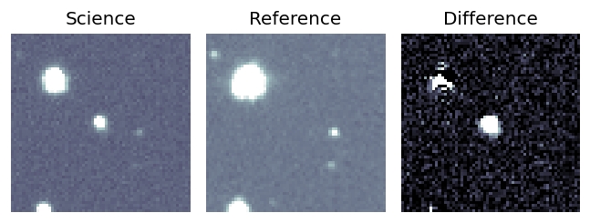
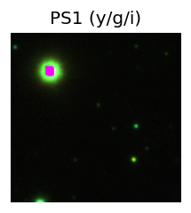
LegacySurvey: 1 sources in 3 arcsec Closest: d = 3.95 arcsec, 351.1 deg (east of north) photoz=0.17 (68% bounds 0.07, 0.66), type=PSF peak abs mag = -22.96 (68% bounds -20.77, -26.42) 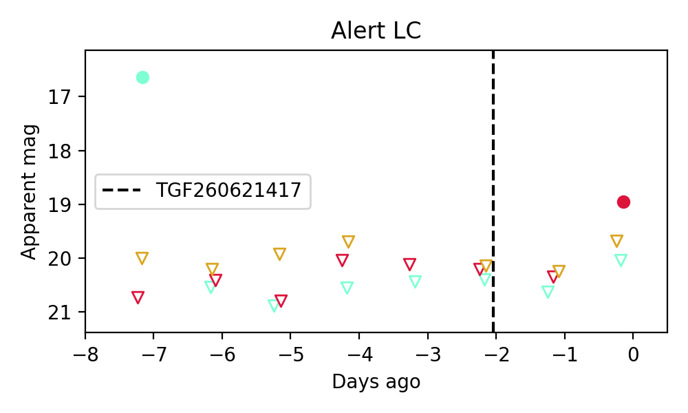
1. ZTF26abcfkoh (Afterglow?) [Back to Top] [Share] [Trigger Swift] [Fritz ] [Lasair ]RA, Dec: 272.55208, -18.37364 18h10m12.50s, -18d-22m-25.11sGalactic (l, b): 11.95606, 0.42371 ext(g-r) = 8.03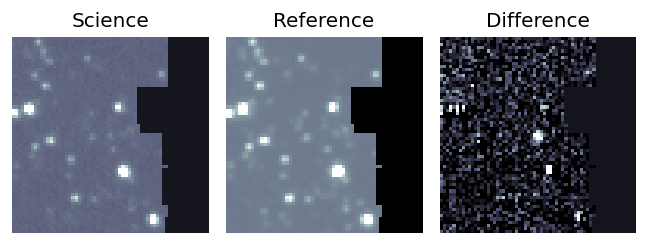
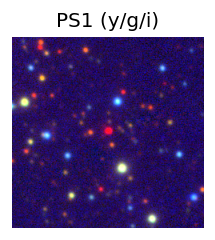
PS1: 1 source in 3 arcsec Closest: d = 0.17 arcsec photoz=0.72+/-0.05 peak abs mag = -37.35 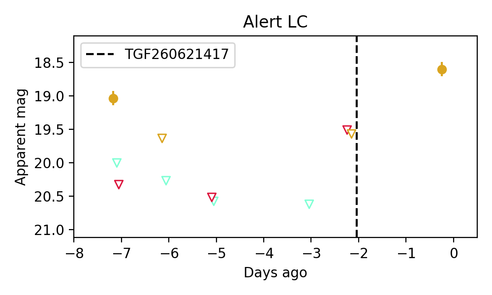
2. ZTF26abcqesk (FBOT?) [Back to Top] [Share] [Trigger Swift] [Fritz ] [Lasair ]RA, Dec: 252.31072, 55.09314 16h49m14.57s, 55d 5m35.30sGalactic (l, b): 83.40401, 39.25719 ext(g-r) = 0.015LegacySurvey: 1 sources in 3 arcsec Closest: d = 0.65 arcsec, 170.1 deg (east of north) photoz=0.37 (68% bounds 0.25, 0.54), type=REX peak abs mag = -23.39 (68% bounds -22.37, -24.35) Consistent with synchrotron, g-r>0!
3. ZTF26abcqplv (Afterglow?) [Back to Top] [Share] [Trigger Swift] [Fritz ] [Lasair ]RA, Dec: 239.60315, 27.22953 15h58m24.76s, 27d13m46.31sGalactic (l, b): 44.23003, 48.67087 ext(g-r) = 0.048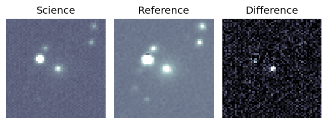
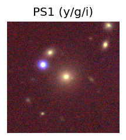
peak abs mag = -18.99 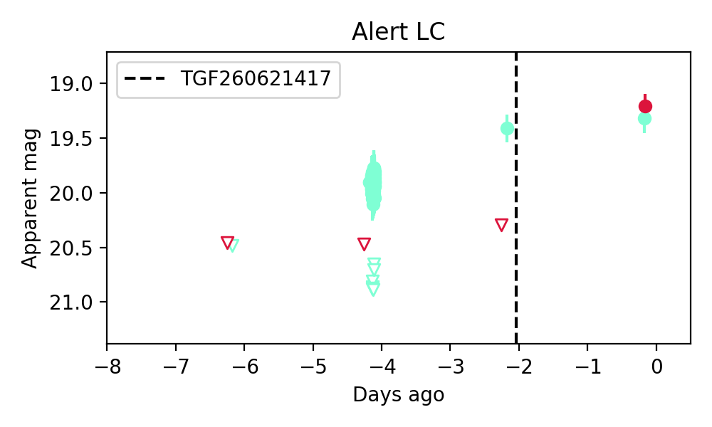
Consistent with synchrotron, g-r>0!
4. ZTF26abcuvko (Afterglow?) [Back to Top] [Share] [Trigger Swift] [Fritz ] [Lasair ]RA, Dec: 230.44214, -12.41028 15h21m46.11s, -12d-24m-37.01sGalactic (l, b): 350.51762, 36.21499 ext(g-r) = 0.174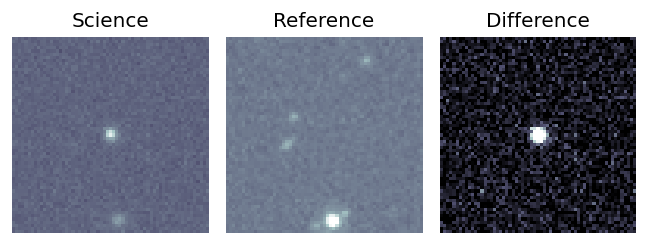
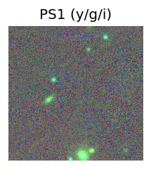
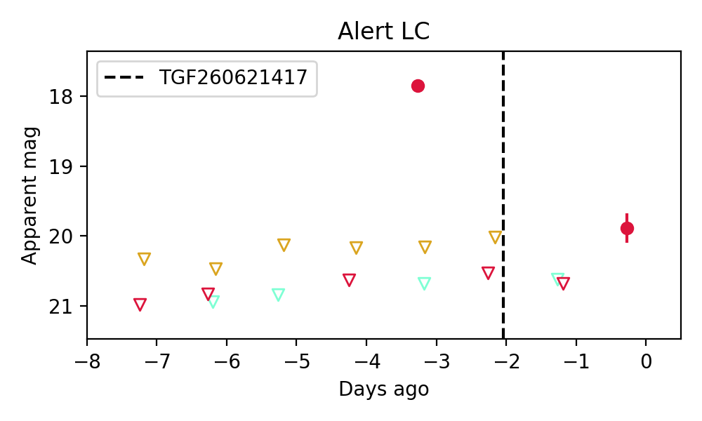
5. ZTF26abdbeqv (FBOT?) [Back to Top] [Share] [Trigger Swift] [Fritz ] [Lasair ]RA, Dec: 281.32661, 49.88352 18h45m18.39s, 49d53m0.66sGalactic (l, b): 79.17755, 21.34898 ext(g-r) = 0.051LegacySurvey: 1 sources in 3 arcsec Closest: d = 0.77 arcsec, 178.7 deg (east of north) photoz=0.71 (68% bounds 0.25, 1.04), type=REX peak abs mag = -23.53 (68% bounds -20.81, -24.55)
6. ZTF26abdgdtq (Afterglow?FBOT?) [Back to Top] [Share] [Trigger Swift] [Fritz ] [Lasair ]RA, Dec: 269.13505, 41.68856 17h56m32.41s, 41d41m18.83sGalactic (l, b): 68.09912, 27.44831 ext(g-r) = 0.035LegacySurvey: 1 sources in 3 arcsec Closest: d = 2.13 arcsec, 146.6 deg (east of north) photoz=0.55 (68% bounds 0.38, 0.81), type=PSF peak abs mag = -22.87 (68% bounds -21.92, -23.87) Consistent with synchrotron, g-r>0!
7. ZTF26abdlyse (FBOT?) [Back to Top] [Share] [Trigger Swift] [Fritz ] [Lasair ]RA, Dec: 227.0697, 3.66183 15h 8m16.73s, 3d39m42.58sGalactic (l, b): 3.27491, 49.78459 ext(g-r) = 0.043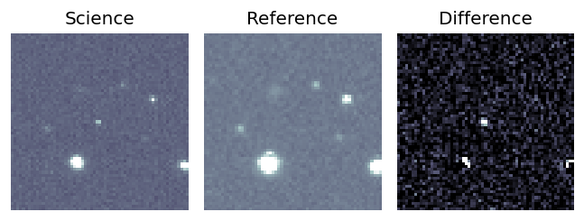
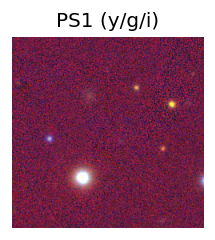
peak abs mag = -19.98 LegacySurvey: 1 sources in 3 arcsec Closest: d = 5.11 arcsec, 230.0 deg (east of north) photoz=0.29 (68% bounds 0.19, 0.59), type=DEV peak abs mag = -21.77 (68% bounds -20.66, -23.57) 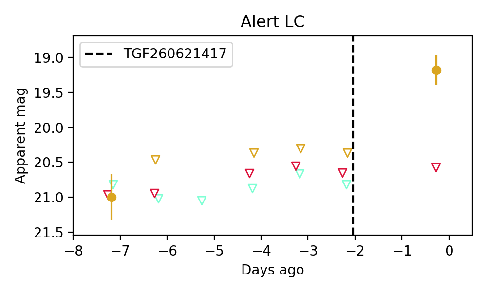
8. ZTF26abdoamh (FBOT?) [Back to Top] [Share] [Trigger Swift] [Fritz ] [Lasair ]RA, Dec: 264.61663, 46.11277 17h38m27.99s, 46d 6m45.98sGalactic (l, b): 72.41755, 31.45116 ext(g-r) = 0.024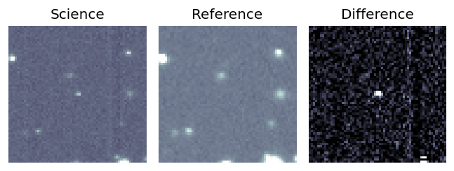
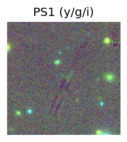
LegacySurvey: 1 sources in 3 arcsec Closest: d = 1.17 arcsec, 27.2 deg (east of north) photoz=0.65 (68% bounds 0.52, 0.83), type=REX peak abs mag = -23.07 (68% bounds -22.52, -23.73) 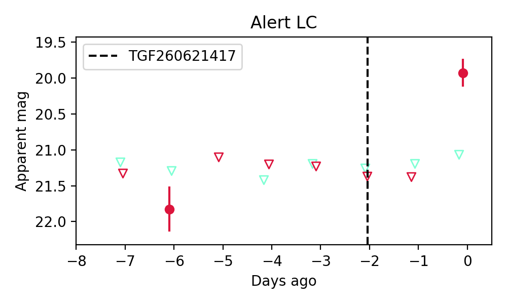
9. ZTF26abdodpu (FBOT?) [Back to Top] [Share] [Trigger Swift] [Fritz ] [Lasair ]RA, Dec: 279.53908, 40.29512 18h38m9.38s, 40d17m42.42sGalactic (l, b): 69.04075, 19.52467 ext(g-r) = 0.081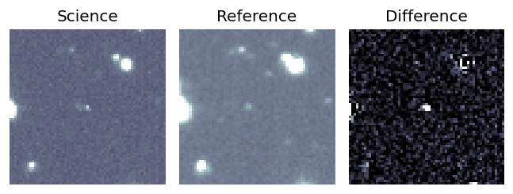
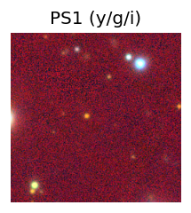
LegacySurvey: 1 sources in 3 arcsec Closest: d = 1.43 arcsec, 222.1 deg (east of north) photoz=0.56 (68% bounds 0.46, 0.69), type=PSF peak abs mag = -22.65 (68% bounds -22.16, -23.21) 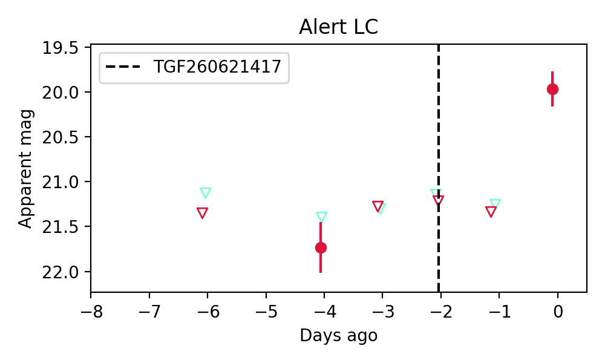
10. ZTF26abdodwg (FBOT?) [Back to Top] [Share] [Trigger Swift] [Fritz ] [Lasair ]RA, Dec: 269.86009, 51.59169 17h59m26.42s, 51d35m30.09sGalactic (l, b): 79.24201, 28.79542 ext(g-r) = 0.052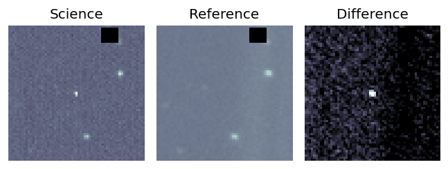
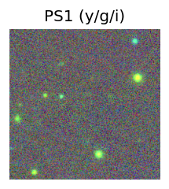
LegacySurvey: 1 sources in 3 arcsec Closest: d = 1.41 arcsec, 113.2 deg (east of north) photoz=0.56 (68% bounds 0.39, 0.82), type=PSF peak abs mag = -23.11 (68% bounds -22.16, -24.12) 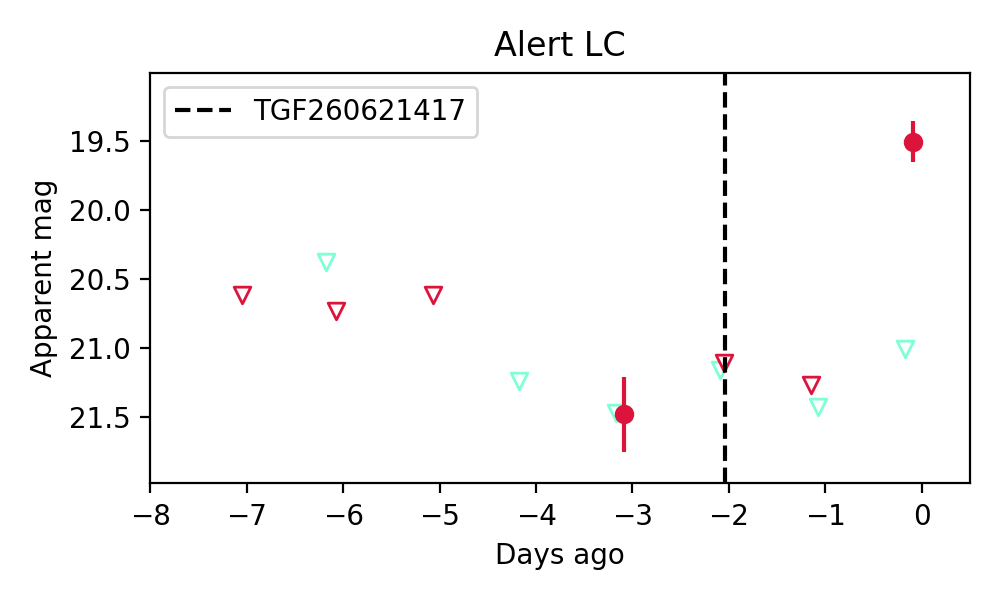
11. ZTF26abdohuy (FBOT?) [Back to Top] [Share] [Trigger Swift] [Fritz ] [Lasair ]RA, Dec: 294.40909, 66.19563 19h37m38.18s, 66d11m44.27sGalactic (l, b): 98.01177, 20.19843 ext(g-r) = 0.118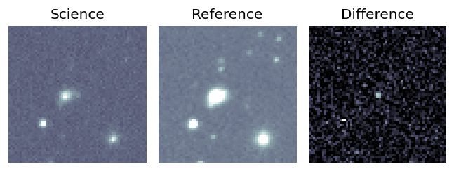
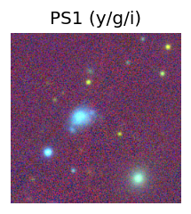
LegacySurvey: 1 sources in 3 arcsec Closest: d = 1.50 arcsec, 242.2 deg (east of north) photoz=0.46 (68% bounds 0.35, 0.59), type=REX peak abs mag = -21.5 (68% bounds -20.78, -22.13) 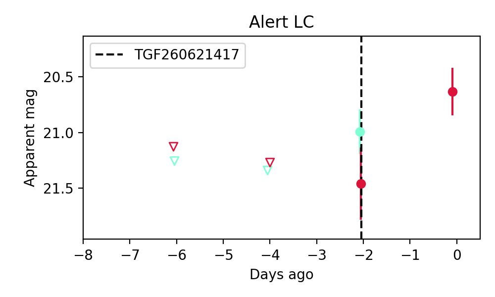
12. ZTF26abdonzv (Afterglow?) [Back to Top] [Share] [Trigger Swift] [Fritz ] [Lasair ]RA, Dec: 295.8825, 2.85184 19h43m31.80s, 2d51m6.64sGalactic (l, b): 41.51707, -10.23099 ext(g-r) = 0.335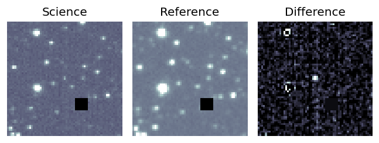
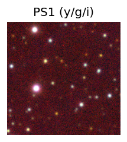
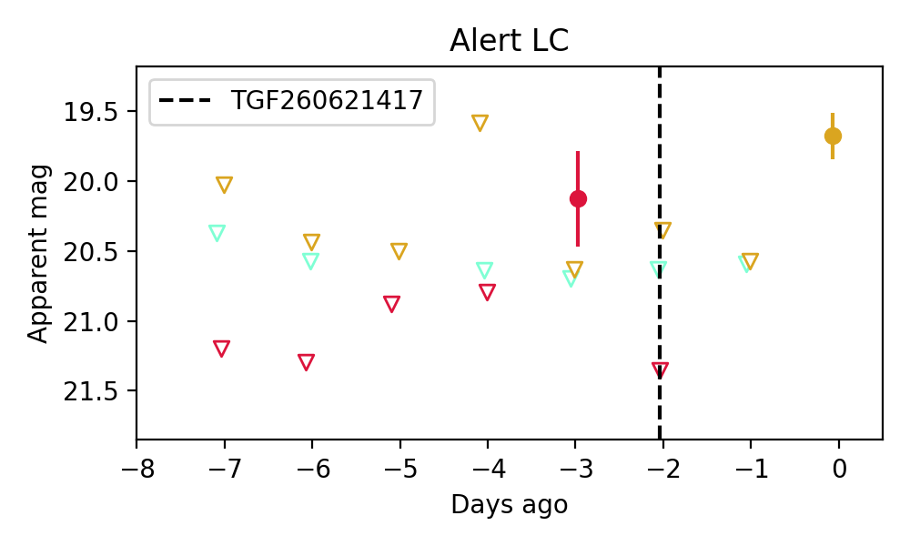
13. ZTF26abdoqwm (FBOT?) [Back to Top] [Share] [Trigger Swift] [Fritz ] [Lasair ]RA, Dec: 307.1306, 1.04305 20h28m31.34s, 1d 2m34.97sGalactic (l, b): 45.52408, -20.94507 ext(g-r) = 0.123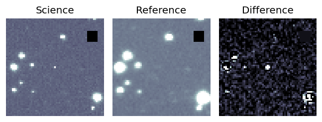
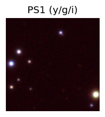
LegacySurvey: 1 sources in 3 arcsec Closest: d = 1.82 arcsec, 87.1 deg (east of north) photoz=0.77 (68% bounds 0.07, 2.73), type=PSF peak abs mag = -24.59 (68% bounds -18.61, -27.94) 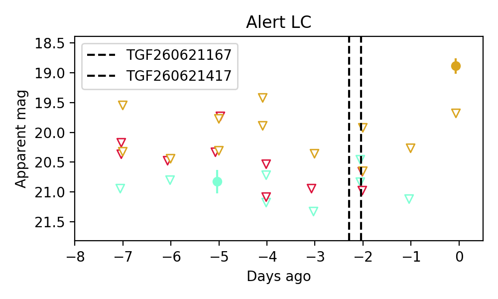